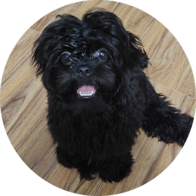

|  |
Founder of hiding rats and lost toys
Hi there! My name is Chuwee Pappap, and I'm a black Shih Tzu who's lucky enough to be cherished by my fur dad and mom. I love to play and be lively, and I have a curious and inquisitive personality that always keeps those around me entertained. With my soft and fluffy black coat that's silky to the touch and my expressive eyes that are always filled with wonder and joy, I'm quite the charmer. My fur dad gave me the nickname "Founder of hiding rats and lost toys" because I have a remarkable talent for discovering and hiding small items. But don't worry, despite my mischievous nature, I'm an affectionate and loyal companion who adores spending time with my family. I enjoy going on walks, discovering new places, and cuddling up for a cozy nap. Overall, I'm a remarkable pup with a unique personality and a heart full of love, which makes me an indispensable member of my fur family.
|